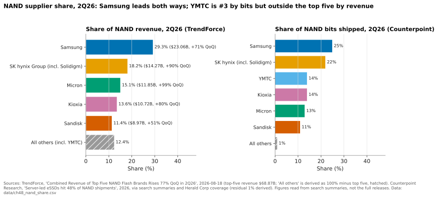

48. Media suppliers and the NAND cycle¶
Depth: L2 · Reading time: ~10 min · Last verified: 2026-11-01 Prerequisites: Media physics · Inside an SSD · Purity and DirectFlash · Hyperscaler ecosystem and financials · Consumption models
TL;DR¶
- Five companies take about 88% of NAND revenue. Top-five revenue hit $68.87B in 2Q26, up 77% in a quarter1. YMTC ships as many bits as Kioxia but earns less per bit2.
- 2026 is a supply-side super-cycle. Enterprise SSDs took ~48% of NAND bits2, wafer additions stayed thin and the HDD shortage pushed cloud buyers to QLC3. Compounded TrendForce forecasts put contract prices ~4.7× their mid-2025 level by 4Q26.
- Array vendors feel the cycle as a lag. Costs reprice quarterly; price lists and contracts reprice slower. Product gross margin dips then recovers, revenue inflates, and cash goes into inventory and prepayments.
- Everpure's exposure is split three ways. Arrays carry NAND on its books, Evergreen//One carries it at fixed contracted prices, and hyperscale DirectFlash carries none because the customer buys the NAND4.
- HDD vs QLC is now about allocation as much as price. Flash's $/TB premium widened to ~19–23× [VERIFY: single-vendor index]5, far above the ~3× cloud buyers need3, but nearline HDD lead times passed 52 weeks.
Why this matters for Everpure strategy¶
NAND is the largest single input in an all-flash array. Everpure buys raw NAND rather than finished SSDs, which makes it one of the few array vendors with a direct relationship to the fabs (see Chapter 26). In April 2026 the CEO wrote that input costs for many high-volume semiconductor components had risen 300–900% since mid-2025, and that Everpure's prices were up about 70% on average since January6. A shock that size moves revenue, gross margin, free cash flow and competitive pricing at once.
The strategy questions follow. How long until an upcycle hits product gross margin, and how fast does it reverse? Is negative free cash flow from strategic buying a hedge or an inventory bet? Does a fixed-price Evergreen//One book become a liability when NAND quadruples? Does the HDD shortage widen Everpure's QLC-versus-disk opening, or close it?
Core concepts¶
The supply base: five oligopolists and a fast-rising sixth¶

Figure 48.1 — Samsung leads on both measures, but YMTC ships as many bits as Kioxia while earning less per bit, because its mix is still mostly consumer. All makers outside the top five together took 12.4% of revenue, so YMTC's revenue share is at most that, against Kioxia's 13.6%.
Data: data/ch48_nand_share.csv
Revenue share rewards mix, because enterprise SSD bits sell at a large premium. Micron grew 99% in a quarter and passed Kioxia for third1. Counterpoint puts YMTC fifth by revenue (TrendForce's brand ranking, which leaves YMTC out of its top five, puts Sandisk fifth) because data-centre SSDs are a small part of its mix, and calls 15% share the level at which a NAND maker can self-fund capex2; YMTC is close.
Semiconductor bridge. This is the DRAM playbook: a handful of IDMs, each node a capex cliff (more decks, hybrid bonding), so wafer starts are the swing factor. Kioxia and Sandisk share fabs through Japanese joint ventures: two brands on one manufacturing base.
| Company | NAND / HDD position | Latest layer node | Flagship enterprise capacity | Relationship to array vendors |
|---|---|---|---|---|
| Samsung | #1 NAND, 29.3% revenue share 2Q261 | V10, 400+ layers, hybrid bonding (announced)7 | BM1743 QLC, 61.44 TB launched; 122.88 TB planned8 | Drive supplier to server and array OEMs; no Everpure DFM qualification disclosed |
| SK hynix + Solidigm | #2, 18.2%1 | 321-layer TLC, largest share of its NAND output in Q2 2026910 | Solidigm D5-P5336, 122.88 TB QLC11 | LTAs with about 10 customers, with deposits12 |
| Micron | #3, 15.1%; exited Crucial consumer business Dec 2025113 | G9, 276 layers10 | 6600 ION, 245.76 TB QLC, shipping May 202614 | G8 QLC qualified for Everpure's 150 TB DFM; G9 for hyperscaler DFMs15 |
| Kioxia | #4, 13.6%; TSE-listed Dec 2024116 | BiCS10, 332 layers, sampling (with Sandisk)17 | LC9, 245.76 TB QLC, announced July 202518 | Long-standing Everpure partner (BiCS8 2 Tb QLC)19; targets 50% of shipments under LTAs by 2028 [VERIFY: search-summary only]20 |
| Sandisk | #5, 11.4%; spun from WD Feb 2025121 | BiCS8 218 layers in product; BiCS10 with Kioxia2217 | UltraQLC SN670, 128/256 TB; 512 TB on 2027 roadmap22 | Most aggressive LTA seller: over a third of FY27 bits contracted by May 202623 |
| YMTC | ~14% of bits, #5 by revenue (Counterpoint)2 | Xtacking 4.0 [VERIFY: layer count] | Mostly consumer and Chinese domestic | US Entity List since Dec 2022; not a practical source for US vendors; adding fabs24 |
| Western Digital | HDD only after the Sandisk split; FQ1'27 revenue $4.38B, 58.1% non-GAAP GM, 88% cloud25 | ePMR / UltraSMR; HAMR ramps 202726 | 40 TB UltraSMR, volume 2H 202626 | Sells mostly to hyperscalers; competes with QLC for nearline sockets |
| Seagate | HDD; FQ1'27 revenue $4.2B, 57.8% non-GAAP GM27 | HAMR Mozaic 4+ (4 TB/platter) | Up to 44 TB ramping at major hyperscalers27 | Expects HAMR ≈ 50% of nearline exabytes exiting 202627 |
Table 48.1 — Supplier profiles, autumn 2026: the NAND makers own the price, while Everpure's direct NAND relationships run through Micron and Kioxia.
CXMT is DRAM-only and matters indirectly: AI has tightened DRAM too, which arrays need for controllers and caches.
Why 2025–26 became a super-cycle¶
Four forces lined up:
- AI pulled enterprise SSD bits. Server SSDs reached ~48% of NAND bit shipments in 2Q262, and enterprise SSD is the one category TrendForce still sees accelerating in 4Q26 (+23–28% versus +15–20% blended)28.
- Supply discipline after the 2022–23 bust. In 1Q23 industry revenue fell to about $8.6B on a ~15% ASP drop29; three years later the top five took $68.87B in a quarter. Scarred suppliers add wafers slowly. Kioxia's FY26–28 capex averages ~¥470B a year, mostly at Kitakami20; SK hynix is building M17 but will stage ramps against demand visibility12. Meaningful new capacity is not expected before late 2027–28.
- The HDD shortage spilled into QLC. In September 2025 TrendForce reported nearline HDD lead times beyond 52 weeks and North American cloud providers evaluating QLC for cold data3. It named that spillover when it turned its 4Q25 outlook from flat to +5–10%30, so the HDD-to-QLC link is a stated driver, not hindsight.
- Supply became a contract. Sandisk had over a third of FY27 bits under long-term agreements (LTAs) of up to five years by May 202623, and reportedly over half later [VERIFY: secondary source]31, with prepayments and price floors and ceilings23. Micron's Crucial exit freed bits for strategic customers13.
![Bar-and-line chart of TrendForce quarterly NAND contract-price forecasts from 1Q23 to 4Q26. Blended NAND bars are negative through 3Q23 (about −12%, −7.5%, −5.5%), positive from 4Q23 to 3Q24 (+10% to +18%), negative in 4Q24 and 1Q25 (−5.5%, −12.5%), then rise to +7.5% in 3Q25, +22.5% in 4Q25 (revised from +7.5%), +57.5% in 1Q26 (revised from +35.5%), +72.5% in 2Q26, +12.5% in 3Q26 and +17.5% in 4Q26. Enterprise SSD bars are shown where published. A compounded index line rises from 100 to about 102 by 2Q25 and 482 by 4Q26.](../../assets/charts/ch48-nand-price.svg)
Figure 48.2 — Two quarters of 55–75% increases did more than the whole 2023–24 recovery; even the "slowing" 3Q26 and 4Q26 forecasts still compound on a much higher base.
Data: data/ch48_nand_price.csv
These are forecasts, revised upward repeatedly; the 1Q26 and 2Q26 figures come from secondary coverage [VERIFY: confirm against TrendForce releases]3233. The index is our arithmetic: 1.075 × 1.225 × 1.575 × 1.725 × 1.125 × 1.175 ≈ 4.7× from 2Q25 to 4Q26, the same order as Everpure's "300–900%" component-cost statement6.
How the cycle reaches an array vendor's P&L¶
flowchart LR
A["NAND contract price up"] --> B["BOM cost per raw TB up"]
B --> C["Price list and quote validity reset"]
C -->|"lag one to three quarters"| D["Product gross margin dips then recovers"]
C --> E["Revenue per system inflates"]
E --> F["Mix shifts to product so blended GM falls"]
B --> G["Strategic buys and supplier prepayments"]
G --> H["Operating cash flow and FCF fall now"]
G -.->|"cheaper bits flow through COGS later"| D
B --> I["Evergreen One capacity bought at new prices"]
I --> J["Subscription GM squeezed at fixed price per TB"]Figure 48.3 — One input-cost shock hits four lines at different speeds: cash immediately, margin with a lag, revenue upward, and the subscription book over the life of its contracts.
Worked example (illustrative). An array sells for $100 with a $35 bill of materials (BOM), $20 of it NAND: 65% gross margin (GM). NAND doubles; the BOM becomes $55. Three choices:
- Hold price: GM falls to 45%.
- Pass through dollars only: price $120 keeps gross profit at $65, but GM falls to 54%.
- Hold GM at 65%: price must rise to $55 ÷ 0.35 ≈ $157, and gross profit dollars rise 57%: the "revenue inflation" in 2026 prints.
The evidence fits. Everpure raised prices on 9 February 2026 and guided product GM to the low end of its 65–70% range34; product GM went from 67.3% in Q4 FY2635 to 65.5% in Q1 FY2736 and 66.2% in Q237. Product revenue grew 54% in Q237 on fewer systems shipped; price, mix and capacity per system made up the difference38. NetApp, which buys finished SSDs, shows the lag more starkly: product GM fell 4.2 points to 55.3% in its January 2026 quarter39 and to 54.6% in its July quarter, and the FY27 GM guide slipped from 68.5–69.5%40 to 68.1–69.1%41. Products rose to 49% of revenue from 42%, dragging the blended margin down even if product GM holds41. One call summary describes a roughly three-quarter pass-through lag [VERIFY: secondary summary]42. Dell repriced ISG on 10 December 2025 and shortened quote validity43.
Cash. Everpure's Q2 FY27 operating cash flow was −$136M and free cash flow −$238M on strategic NAND and component purchases; a third party reads ~$577M as prepaid expenses [VERIFY: confirm in 10-Q]44. Management said supply coverage was sufficient "for the foreseeable future" and pricing had roughly caught up with costs45. In derivatives terms this is a long forward on NAND: it pays if 4Q26's +15–20% arrives, and becomes write-down risk if the cycle breaks as in 4Q24.
Evergreen exposure. Under Evergreen//One, Everpure owns the hardware and bills per TB used, so capacity added mid-contract is bought at today's NAND price but billed at yesterday's rate: a short position on NAND that pays in downcycles. Evergreen//One prices rose far less than product prices38; one partner reports ~+5% against 30%+ on Evergreen//Forever quotes [VERIFY: partner blog]46. Subscription GM slipped only from 75.6% to 74.9% between Q1 and Q2 FY273637. Hyperscale sits outside all this: Everpure does not procure that NAND4.
HDD vs QLC economics in 2026¶
Enterprise SSDs cost about 10× nearline disk per TB in 202047 (Chapter 2 has the curve). In 2026 one index put the premium at 22.6× in Q1 and 18.6× in Q3 (a 30 TB TLC SSD at ~$22,600 against $1,216 for a 30 TB HDD) [VERIFY: single-vendor index]5. TrendForce says cloud buyers need QLC within ~3× of HDD $/TB3.
Worked example: does power close the gap? Store 10 PB raw. Micron's comparison gives ~8.2 TB/W for its 245 TB SSD and 4.4 TB/W for a 44 TB HDD48: about 1.2 kW versus 2.3 kW, a 1.05 kW gap. Over five years at PUE 1.4 and $0.10/kWh that saves 1.05 × 43,800 h × 1.4 × $0.10 ≈ $6.4k. HDD media at ~$40/TB cost $0.4M; a 3× premium adds $0.8M, an 18× premium about $7M. Power never closes the gap; rack space, performance per TB, data reduction and failure handling must. Hence array vendors sell effective $/TB and total cost of ownership (Chapter 4).
Disk makers have their own upcycle: Seagate and Western Digital both posted ~58% non-GAAP gross margins in the September quarter2725, adding exabytes through areal density, not factories. Neither medium is cheap and both are rationed, so delivery capacity decides as much as $/TB.
How Everpure approaches it vs. competitors¶
| Vendor model | What it buys | Who carries NAND price risk | Pass-through tools | 2026 evidence |
|---|---|---|---|---|
| Everpure enterprise arrays | Raw NAND (Micron, Kioxia) → own DFMs | Everpure | List-price rises, 30-day quotes, strategic buys | ~70% average price rise; product GM 65.5–66.2%; Q2 FCF −$238M63744 |
| Everpure Evergreen//One | Same NAND, owned by Everpure | Everpure, at fixed $/TB | Smaller price changes on new contracts | Subscription GM 74.9% in Q2 FY2737 |
| Everpure hyperscale licence | Nothing: the customer buys NAND | Hyperscaler | Not needed | No NAND procured4 |
| NetApp, Dell, HPE arrays | Finished SSDs from NAND makers | Vendor; the SSD maker takes its own margin first | Price increases, shorter quote validity | NetApp product GM 54.6%; Dell ISG repricing4143 |
| Software-only (VAST, WEKA) | No media; hardware partners or the customer buy | Customer or hardware partner | Not on vendor P&L | Deal sizes and timing exposed instead |
Table 48.2 — Everpure is unusual in holding all three exposures at once: direct NAND buyer, fixed-price subscription owner and royalty-only licensor.
Steelman the alternatives. Buying finished SSDs lets NetApp or Dell switch among four or five suppliers without qualifying dies, and pushes yield and firmware risk onto the drive maker. Everpure's raw-NAND model removes the SSD maker's margin and controller, but each new die needs characterisation, slowing supplier additions (Chapter 26). Software-only vendors keep NAND off their P&L, though customers still pay it. VDURA's CEO accused Everpure of padding margins in the shortage; Everpure rejected the claim49.
Options a strategy team might evaluate (public information only):
- Supply agreements with collars. Suppliers now offer multi-year LTAs with prepayments, floors and ceilings2312. A collar caps cost but locks a floor that becomes overpayment in the next bust.
- A third NAND source. Adding SK hynix/Solidigm, Samsung or Sandisk to Micron and Kioxia buys allocation leverage at the cost of qualification effort. YMTC is ruled out by the Entity List.
- Pricing mechanics. Index-linked pricing on large deals, short quote validity (adopted) or an Evergreen//One reset clause, each traded against the price predictability Evergreen sells.
- Shift the exposure. Extend the hyperscale pattern, where the customer procures NAND, to sovereign or neocloud deals.
- Use the cycle commercially. Evergreen//One price stability is a weapon while flash rises, if the balance sheet can carry the short position.
History and trajectory¶
timeline
title NAND cycle and supplier events, 2022 to 2028
2022 to 2023 : Demand bust and inventory glut : Production cuts : YMTC added to Entity List
2024 : Recovery led by enterprise SSD : Kioxia lists in Tokyo in December
2025 : Sandisk spins out from Western Digital : 4Q24 to 1Q25 correction : HDD shortage pushes QLC
2026 : Contract prices up about 55 to 75 percent per quarter in 1H : LTAs with prepayments spread
2027 to 2028 : New fabs from SK hynix and YMTC : HAMR scales at Seagate and WDFigure 48.4 — Each bust taught suppliers capex discipline, and 2026 is the first upcycle where much of the supply was sold forward under multi-year contracts.
Kioxia listed in Tokyo on 18 December 202416 and Sandisk on Nasdaq on 24 February 202521, leaving Western Digital a pure HDD company and creating two NAND pure-plays with every reason to keep supply tight. YMTC is planning new fabs despite export controls24. Signals to watch: 1Q27 contract forecasts turning flat; LTA coverage at Sandisk and Kioxia (smoother for contracted buyers, choppier spot for everyone else); YMTC's eSSD mix; Everpure's cash flow normalising as guided; and product GM returning toward mid-range.
Numbers that matter¶
| Metric | Value | Context | Source / date |
|---|---|---|---|
| Top-5 NAND revenue, 2Q26 | $68.87B (+77% QoQ) | Samsung 29.3%, SK hynix 18.2%, Micron 15.1%, Kioxia 13.6%, Sandisk 11.4% | TrendForce, 2026-08-181 |
| Enterprise SSD share of NAND bits | ~48% (2Q26) | AI servers absorb half of flash output | Counterpoint, 20262 |
| 4Q26 contract-price forecast | NAND +15–20%; enterprise SSD +23–28% QoQ | Only memory category still accelerating | TrendForce, 2026-09-3028 |
| Compounded contract-price move, 2Q25→4Q26 | ~4.7× | Product of forecast midpoints | Worked example (Figure 48.2) |
| Everpure average price change, 2026 YTD | ~+70% | Input costs up 300–900% since mid-2025 | CEO letter, 2026-04-236 |
| Everpure Q2 FY27 FCF | −$238M | Strategic NAND and component buys | Yahoo Finance, 2026-0844 |
| NetApp product GM | 54.6% (Jul-26 qtr) | Component costs; products 49% of revenue | Nasdaq, 2026-0941 |
| SSD/HDD $/TB premium | ~18.6–22.6× (2026) vs ~10× (2020) | Single-vendor index | PCSP / B&F547 |
| QLC break-even vs HDD for cloud buyers | ≤ ~3× HDD $/TB | TrendForce's threshold | TrendForce, 2025-093 |
Conversation playbook¶
Questions for a PM
- "How much of this year's product growth is price versus units?" Strong: splits price, mix (capacity per system, QLC share) and units, admits units fell in Q238, and says how comparisons look when NAND deflates.
- "What happens to Evergreen//One margins if NAND stays here two more years?" Strong: names the exposure (capacity added at today's cost against contracted $/TB) and the offsets: renewal repricing, data-reduction guarantees, DFM density.
- "Where does QLC beat disk in a 2026 deal, at a ~20× media premium?" Strong: effective $/TB after data reduction, plus space, power and performance; and an admission that pure cold archive still goes to disk.
Questions for an engineer
- "What does qualifying a new NAND die for DFMs cost in time and testing?" Strong: names the steps (read thresholds, retention, program timing, endurance under Purity's write patterns) and a realistic timeline.
- "How does a layer jump change DFM cost per TB versus a commodity SSD?" Strong: separates NAND $/bit, the same for everyone, from controller, DRAM and over-provisioning savings, which are DirectFlash's own.
- "If one supplier's next node slips, how fast can volume shift?" Strong: dual-qualified module SKUs and Purity handling mixed NAND generations in one array.
Don't say this:
- "DirectFlash protects Everpure from NAND prices." It removes SSD controllers and margins, not the NAND cost.
- "Higher prices mean higher margins." GM% usually falls first, even as gross profit dollars rise.
- "NAND makers are just gouging." Contract prices follow wafer supply: post-2023 capex restraint, AI demand and the HDD shortage.
- "QLC has killed the hard drive." Disk makers posted record margins in 2026.
- "YMTC is a cheap second source." Not for a US vendor under export controls.
Going deeper (optional, L3 pointers)¶
- TrendForce quarterly NAND and enterprise SSD contract-price releases: read the segment tables, not the headlines.
- Sandisk and Kioxia earnings materials on LTA structure (prepayments, collars, duration).
- Everpure's Q2 FY27 10-Q (prepaids, inventory, purchase commitments) to size the forward NAND position; NetApp's purchase-obligation notes for comparison.
Key terms¶
- Contract price — the negotiated quarterly or monthly price large buyers pay NAND makers, as distinct from the volatile spot market.
- Long-term agreement (LTA) — a multi-year supply contract, now often with prepayments and price floors and ceilings.
- Pass-through lag — the delay between a component-cost change and the matching change in a vendor's selling prices.
- Revenue inflation — revenue growth driven by higher prices rather than more units.
- Strategic purchase — buying components ahead of need to secure supply and lock in cost, at the expense of near-term cash flow.
- Nearline HDD — high-capacity 7,200 rpm drives used for warm and cold data in data centres.
- HAMR — heat-assisted magnetic recording, which raises HDD platter density.
- Bit share vs revenue share — share of NAND capacity shipped versus share of NAND sales dollars; the gap reflects product mix.
Sources¶
-
TrendForce, "Combined Revenue of Top Five NAND Flash Brands Rises 77% QoQ in 2Q26; Micron Moves Up to Third Place, Says TrendForce," 2026-08-18. https://www.trendforce.com/presscenter/news/20260818-13186.html (retrieved 2026-11-01). Shares via search summary of the release, corroborated by Evertiq, 2026-08-18, https://evertiq.com/news/2026-08-18-top-five-nand-flash-brands-post-77-revenue-surge-in-q2 (retrieved 2026-11-01). ↩↩↩↩↩↩↩↩
-
Counterpoint Research, "Server-led eSSDs hit 48% of NAND shipments," 2026. https://counterpointresearch.com/de/insights/server-led-essds-hit-48-percent-of-nand-shipments (retrieved 2026-11-01). Figures via search summary. ↩↩↩↩↩↩
-
TrendForce, "Soaring Inference AI Demand Triggers Severe Nearline HDD Shortages; QLC SSD Shipments Poised for Breakout in 2026," 2025-09-15. https://www.trendforce.com/presscenter/news/20250915-12714.html (retrieved 2026-11-01). ↩↩↩↩↩
-
Everpure, "Everpure Lands New Design Win with Second Top-Five Hyperscaler," 2026-08-10, https://www.everpuredata.com/company/newsroom/press-releases/everpure-lands-new-design-win-with-second-top-five-hyperscaler.html; Motley Fool, "Everpure (P) Q2 2027 Earnings Call Transcript," 2026-08-31, https://www.fool.com/earnings/call-transcripts/2026/08/31/everpure-p-q2-2027-earnings-call-transcript/ (both retrieved 2026-11-01). ↩↩↩
-
PC Server & Parts, "Enterprise SSD Prices 2026: How to Buy Server Storage Now," 2026 (citing VDURA price index via Forbes). https://pcserverandparts.com/news/enterprise-ssd-prices-2026-server-storage-buying-guide/ (retrieved 2026-11-01). ↩↩↩
-
The Register, "Everpure CEO letter on component costs," 2026-04-23. https://theregister.com/2026/04/23/everpure_letter_covid (retrieved 2026-11-01). Figures via search summary; also Blocks & Files, "Everpure reveals supply chain issues, warns customers," 2026-04-23, https://www.blocksandfiles.com/flash/2026/04/23/everpure-reveals-supply-chain-issues-warns-customers/5218662 (retrieved 2026-11-01). ↩↩↩↩
-
Tom's Hardware, "Samsung unveils 10th Gen V-NAND: 400+ layers, 5.6 GT/s and hybrid bonding," 2026. https://www.tomshardware.com/pc-components/ssds/samsung-unveils-10th-gen-v-nand-400-layers-5-6-gt-s-and-hybrid-bonding (retrieved 2026-11-01). ↩
-
Blocks & Files, "Samsung takes on Solidigm with 61.44 TB QLC SSD," 2024-07-02. https://www.blocksandfiles.com/ai-ml/2024/07/02/samsung-takes-on-solidigm-with-6144-tb-qlc-ssd/1611674 (retrieved 2026-11-01). ↩
-
Blocks & Files, "SK hynix begins mass production of 321-layer 3D NAND," 2024-11-21. https://www.blocksandfiles.com/ai-ml/2024/11/21/sk-hynix-begins-mass-production-of-321-layer-3d-nand/1605947 (retrieved 2026-11-01). ↩
-
Tom's Hardware, "Inside the future of 3D NAND: The roadmap to 500 layers," 2026. https://www.tomshardware.com/pc-components/storage/inside-the-future-of-3d-nand-the-roadmap-to-500-layers (retrieved 2026-11-01). ↩↩
-
StorageReview, "Solidigm 122.88TB D5-P5336 Review," 2025. https://www.storagereview.com/review/solidigm-122-88tb-d5-p5336-review-high-capacity-storage-meets-operational-efficiency (retrieved 2026-11-01). ↩
-
LongPort (transcript summary), "SK hynix: LTAs include deposits; capacity adds won't cause immediate oversupply," 2026-07. https://longportapp.cn/news/294135299 (retrieved 2026-11-01). ↩↩↩
-
StorageNewsletter, "Micron Announces Exit from Crucial Consumer Business," 2025-12-05. https://www.storagenewsletter.com/2025/12/05/micron-announces-exit-from-crucial-consumer-business/ (retrieved 2026-11-01). ↩↩
-
Micron, "Industry-Leading 245TB Micron 6600 ION Data Center SSD Now Shipping," 2026-05-05. https://investors.micron.com/news/press-release/2026/Industry-Leading-245TB-Micron-6600-ION-Data-Center-SSD-Now-Shipping/default.aspx (retrieved 2026-11-01). ↩
-
Blocks & Files, "Pure qualifies Micron's 276-layer flash," 2025-01-08. https://blocksandfiles.com/2025/01/08/pure-qualifies-microns-276-layer-flash/ (retrieved 2026-11-01). ↩
-
Nippon.com (Jiji), "Chipmaker Kioxia Makes Solid Stock Market Debut," 2024-12-18. https://nippon.com/en/news/yjj2024121800877 (retrieved 2026-11-01). ↩↩
-
Tom's Hardware, "Kioxia and Sandisk sample world's densest 3D NAND — new 332-Layer beats Samsung's 400-Layer NAND," 2026. https://www.tomshardware.com/pc-components/ssds/kioxia-and-sandisk-sample-worlds-densest-3d-nand-new-332-layer-beats-samsungs-400-layer-nand (retrieved 2026-11-01). ↩↩
-
StorageReview, "245TB Kioxia LC9 SSD sets new SSD density record," 2025. https://www.storagereview.com/news/245tb-kioxia-lc9-ssd-sets-new-ssd-density-record (retrieved 2026-11-01). ↩
-
Blocks & Files, "Kioxia 2 terabit NAND," 2024-07-03. https://blocksandfiles.com/2024/07/03/kioxia-2-terabit-nand/ (retrieved 2026-11-01). ↩
-
TrendForce News, "Kioxia Adopts Cautious Capex Strategy Despite NAND Upcycle," 2026-06-18. https://www.trendforce.com/news/2026/06/18/news-kioxia-adopts-cautious-capex-strategy-despite-nand-upcycle-reportedly-10-below-fy23-peak-key-concerns-in-focus/ (retrieved 2026-11-01). ↩↩
-
Sandisk, "Sandisk Celebrates Nasdaq Listing After Completing Separation from Western Digital," 2025-02-24. https://investor.sandisk.com/news-releases/news-release-details/sandisk-celebrates-nasdaq-listing-after-completing-separation (retrieved 2026-11-01). ↩↩
-
Blocks & Files, "Sandisk unveils 256 TB SSD for AI workloads, shipping in 2026," 2025-08-05. https://www.blocksandfiles.com/ai-ml/2025/08/05/sandisk-unveils-256-tb-ssd-for-ai-workloads-shipping-in-2026/1589534 (retrieved 2026-11-01). ↩↩
-
TrendForce News, "Sandisk Long-Term Deals Gain Scale: Over One-Third of FY27 Bits Reportedly Locked, 50% in Sight," 2026-05-05. https://www.trendforce.com/news/2026/05/05/news-sandisk-long-term-deals-gain-scale-over-one-third-of-fy27-bits-reportedly-locked-50-in-sight-hbf-advances/ (retrieved 2026-11-01). ↩↩↩↩
-
Evertiq, "YMTC plans new fabs to boost capacity amid rising US-China tensions," 2026-04-14. https://evertiq.com/design/2026-04-14-ymtc-plans-new-fabs-to-boost-capacity-amid-rising-us-china-tensions (retrieved 2026-11-01). ↩↩
-
Western Digital, "WD Reports Fiscal First Quarter 2027 Financial Results," 2026-10-22. https://www.westerndigital.com/company/newsroom/press-releases/2026/2026-10-22-wd-reports-fiscal-first-quarter-2027-financial-results (retrieved 2026-11-01). ↩↩
-
Western Digital, "Western Digital Accelerates Storage Innovation for AI Era," 2026-02-03. https://www.westerndigital.com/company/newsroom/press-releases/2026/2026-02-03-western-digital-accelerates-storage-innovation-for-ai-era (retrieved 2026-11-01). ↩↩
-
Zacks, "Seagate Q1 Earnings Call Highlights Strong Demand and HAMR Expansion," 2026-10. https://www.zacks.com/stock/news/3017300/seagate-q1-earnings-call-highlights-strong-demand-and-hamr-expansion (retrieved 2026-11-01). ↩↩↩↩
-
TrendForce, "AI Server Demand Sustains Memory Contract Price Increases in 4Q26, While Consumer-Side Pressure Persists," 2026-09-30. https://www.trendforce.com/presscenter/news/20260930-13258.html (retrieved 2026-11-01). ↩↩
-
TrendForce, 1Q23 NAND Flash revenue release, 2023-06-01. https://trendforce.com/presscenter/news/20230601-11698.html (retrieved 2026-11-01). Industry revenue, not top-five only. ↩
-
TrendForce, "NAND Flash Prices to Rise 5–10% in 4Q25, Driven by Spillover Demand for QLC Products," 2025-09-25. https://www.trendforce.com/presscenter/news/20250925-12736.html (retrieved 2026-11-01). ↩
-
TIKR, "SanDisk Locked In $42 Billion in Contracts. Here's What Management Told JPMorgan About What Comes Next," 2026. https://www.tikr.com/blog/sandisk-locked-in-42-billion-in-contracts-heres-what-management-told-jpmorgan-about-what-comes-next (retrieved 2026-11-01). ↩
-
TechNews (citing TrendForce), 1Q26 memory contract-price revision, 2026-02-02. https://finance.technews.tw/2026/02/02/1q26-memory-price/ (retrieved 2026-11-01). Via search summary. ↩
-
TechNews (citing TrendForce), "AI server demand drives 2Q26 memory contract price increase; CSPs lock supply with long-term deals," 2026-03-31. https://technews.tw/2026/03/31/ai-server-demand-drives-2q26-memory-contract-price-increase-csps-lock-supply-long-term-deals/ (retrieved 2026-11-01). Via search summary. ↩
-
Alpha Spread, "P Q4-2026 Earnings Call," 2026-02-25. https://www.alphaspread.com/security/nyse/p/investor-relations/earnings-call/q4-2026 (retrieved 2026-11-01). ↩
-
Morningstar / PR Newswire, "Everpure Announces Fiscal Fourth Quarter and Full Year 2026 Financial Results," 2026-02-25. https://www.morningstar.com/news/pr-newswire/20260225sf95343/everpure-announces-fiscal-fourth-quarter-and-full-year-2026-financial-results (retrieved 2026-11-01). ↩
-
Nasdaq, "Everpure Q1 Earnings Call Highlights," 2026-05. https://www.nasdaq.com/articles/everpure-q1-earnings-call-highlights (retrieved 2026-11-01). ↩↩
-
Investing.com, "Everpure Q2 FY27 slides: 38% revenue growth, guidance raised sharply," 2026-08. https://www.investing.com/news/company-news/everpure-q2-fy27-slides-38-revenue-growth-guidance-raised-sharply-93CH-4878054 (retrieved 2026-11-01). ↩↩↩↩↩
-
Trefis, "What Are Everpure Stock Bulls Not Worried About?," 2026-09-24. https://www.trefis.com/articles/616473/what-are-everpure-stock-bulls-not-worried-about/2026-09-24 (retrieved 2026-11-01). ↩↩↩
-
MarketBeat, "NetApp Q3 Earnings Call Highlights," 2026-02-26. https://www.marketbeat.com/instant-alerts/netapp-q3-earnings-call-highlights-2026-02-26/ (retrieved 2026-11-01). ↩
-
NetApp (Business Wire), "NetApp Reports Fourth Quarter and Fiscal Year 2026 Results," 2026-05-28. https://www.businesswire.com/news/home/20260528348500/en/NetApp-Reports-Fourth-Quarter-and-Fiscal-Year-2026-Results (retrieved 2026-11-01). ↩
-
Nasdaq, "NetApp Q1 Earnings Call Highlights Durable AI-Led Demand," 2026-09. https://www.nasdaq.com/articles/netapp-q1-earnings-call-highlights-durable-ai-led-demand (retrieved 2026-11-01). ↩↩↩↩
-
Earnings Whispers, "NetApp (NTAP) earnings call summary," 2026-05. https://www.earningswhispers.com/article/NTAP/2605288500 (retrieved 2026-11-01). ↩
-
MarketBeat, "Dell Technologies Q4 2026 Earnings Call Transcript," 2026-02-26. https://www.marketbeat.com/earnings/reports/2026-2-26-dell-technologies-inc-stock/ (retrieved 2026-11-01). ↩↩
-
Yahoo Finance, "Everpure (P) Grew Revenue 38% but Free Cash Flow Was Negative," 2026-08. https://finance.yahoo.com/markets/stocks/articles/everpure-p-grew-revenue-38-023544268.html (retrieved 2026-11-01). ↩↩↩
-
Nasdaq, "Everpure Q2 Earnings Call Highlights," 2026-08. https://www.nasdaq.com/articles/everpure-q2-earnings-call-highlights (retrieved 2026-11-01). ↩
-
Daymark Solutions, "The IT supply chain has changed. Your strategy should too," 2026-05. https://www.daymarksi.com/blog/the-it-supply-chain-has-changed.-your-strategy-should-too (retrieved 2026-11-01). ↩
-
Blocks & Files, "Enterprise SSDs are ten times the price of nearline disk drives," 2020-05-15. https://blocksandfiles.com/2020/05/15/enterprise-ssds-are-ten-x-cost-of-nearline-disk-drives/ (retrieved 2026-11-01). ↩↩
-
StorageReview, "Micron 6600 ION 245TB SSD Review: A Quarter Petabyte Per Drive Bay," 2026. https://www.storagereview.com/review/micron-6600-ion-245tb-ssd-review-a-quarter-petabyte-per-drive-bay (retrieved 2026-11-01). Vendor comparison. ↩
-
VDURA, "VDURA chief accuses Everpure of padding margins amid memory crunch price surge," 2026-04-28. https://www.vdura.com/2026/04/28/vdura-chief-accuses-everpure-of-padding-margins-amid-memory-crunch-price-surge/ (retrieved 2026-11-01); Everpure's rebuttal reported by SDxCentral, https://www.sdxcentral.com/news/everpure-ceo-defends-pricing-surge-and-banks-the-companys-future-on-data-primacy/ (retrieved 2026-11-01). ↩